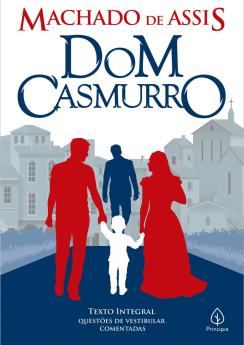
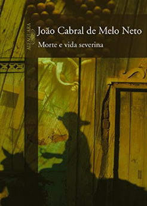

Biblioteca Start


 Autor: Bras Cubas
Autor: Bras Cubas
Retrata a escravidão, as classes sociais, o cientificismo e o positivismo da época, chegando a criar, inclusive, uma nova filosofia — mais bem desenvolvida posteriormente em Quincas Borba (1891) — o humanitismo, sátira à lei do mais forte do "darwinismo social
Autor: Machado de Assisconta a história de Bento Santiago (Bentinho), apelidado de Dom Casmurro por ser calado e introvertido. Na adolescência, apaixona-se por Capítu, abandonando o seminário e, com ele, os desígnios traçados por sua mãe, Dona Glória, para que se tornasse padre.
Autor:João Cabral de Melo Netoretrata a trajetória de Severino, que deixa o sertão nordestino em direção ao litoral em busca de melhores condições de vida. Severino encontra no caminho outros nordestinos que, como ele, passam pelas privações impostas ao sertão.